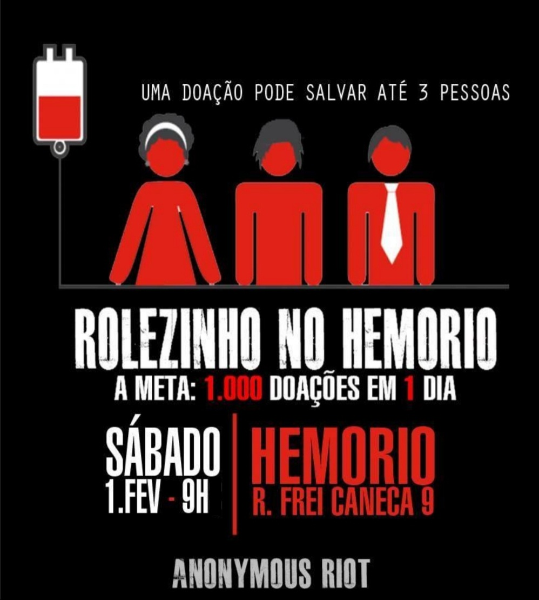

UNICAMP201501
Leia o texto abaixo:
“Boas coisas acontecem para quem espera. As melhores coisas acontecem para quem se levanta e
faz.” (Domínio público.)
Considerando o texto acima e a maneira como ele é estruturado, podemos afirmar que:
A alternativa (a) está equivocada ao afirmar que o texto desvaloriza o segundo enunciado em relação ao primeiro, o que é incorreto, já que o segundo enunciado é mais positivo que o primeiro: “As melhores coisas acontecem…”.
A alternativa (b) também está incorreta, pois pressupõe que o termo “coisas” se refere ao mesmo objeto nas duas frases, o que não é explicitado no texto. Assim, não é possível ter certeza, sendo plausível que o termo se refira a elementos distintos.
A alternativa (c) está equivocada, uma vez que os trechos mencionados não estabelecem nenhuma relação de temporalidade.
A alternativa (d), portanto, é a correta, pois ambas as frases apresentam estrutura semelhante
UNICAMP201502
O trecho a seguir foi retirado da apresentação da obra Pioneiras da ciência no Brasil. O livro traz biografias de cientistas brasileiras que iniciaram suas carreiras nos anos 1930 e 1940.
Cabe uma reflexão sobre a divisão dos papéis masculino e feminino dentro da família, para tentar melhor entender por que a presença feminina no mundo científico mantém-se minoritária. Constata-se que, no Brasil, ainda cabem às mulheres, fortemente, as responsabilidades domésticas e de socialização das crianças, além dos cuidados com os velhos. Assim, ainda que dividindo o espaço doméstico com companheiros, as mulheres têm, na maioria dos lares, maior necessidade de articular os papéis familiares e profissionais. A ideia de que conciliar vida profissional e familiar representa uma dificuldade é reforçada pela análise da população ocupada feminina com curso superior, feita por estudiosos, que constata que cerca de 46% dessas mulheres vivem em domicílios sem crianças. Como as cientistas são pessoas com diplomas superiores, elas estão compreendidas nesse universo. Por outro lado, talvez a sociedade brasileira ainda mantenha uma visão estereotipada – calcada num modelo masculino tradicional - do que seja um profissional da ciência. E certamente faltam às mulheres modelos positivos, as grandes cientistas que lograram conciliar sucesso profissional com vida pessoal realizada. Para quebrar os estereótipos femininos, para que novas gerações possam se mirar em novos modelos, é necessário resgatar do esquecimento figuras femininas que, inadvertida ou deliberadamente, permaneceram ocultas na história da ciência em nosso país.
(Adaptado de Hildete P. de Melo e Lígia Rodrigues, Pioneiras da ciência no Brasil. Rio de Janeiro: SBPC, 2006, p. 3-4.)
Indique a alternativa correta. No texto,
A alternativa correta para essa questão é a alternativa B.
A alternativa (a) está equivocada, pois a informação numérica contida no texto apresenta a porcentagem de mulheres na ciência que não convivem com crianças em seu domicílio, o que difere do que é afirmado na alternativa.
A alternativa (b) está correta, pois a conclusão do texto justifica a produção do livro.
A alternativa (c) está equivocada, pois, de acordo com a autora, ainda faltam esses modelos positivos no Brasil: “E certamente faltam às mulheres modelos positivos, as grandes cientistas que lograram conciliar sucesso profissional com vida pessoal realizada”.
A alternativa (d) está equivocada, já que as atividades domésticas configuram pontos importantes do texto.
UNICAMMP201503
O trecho a seguir foi retirado da apresentação da obra Pioneiras da ciência no Brasil. O livro traz biografias de cientistas brasileiras que iniciaram suas carreiras nos anos 1930 e 1940.
Cabe uma reflexão sobre a divisão dos papéis masculino e feminino dentro da família, para tentar melhor entender por que a presença feminina no mundo científico mantém-se minoritária. Constata-se que, no Brasil, ainda cabem às mulheres, fortemente, as responsabilidades domésticas e de socialização das crianças, além dos cuidados com os velhos. Assim, ainda que dividindo o espaço doméstico com companheiros, as mulheres têm, na maioria dos lares, maior necessidade de articular os papéis familiares e profissionais. A ideia de que conciliar vida profissional e familiar representa uma dificuldade é reforçada pela análise da população ocupada feminina com curso superior, feita por estudiosos, que constata que cerca de 46% dessas mulheres vivem em domicílios sem crianças. Como as cientistas são pessoas com diplomas superiores, elas estão compreendidas nesse universo. Por outro lado, talvez a sociedade brasileira ainda mantenha uma visão estereotipada – calcada num modelo masculino tradicional - do que seja um profissional da ciência. E certamente faltam às mulheres modelos positivos, as grandes cientistas que lograram conciliar sucesso profissional com vida pessoal realizada. Para quebrar os estereótipos femininos, para que novas gerações possam se mirar em novos modelos, é necessário resgatar do esquecimento figuras femininas que, inadvertida ou deliberadamente, permaneceram ocultas na história da ciência em nosso país.
(Adaptado de Hildete P. de Melo e Lígia Rodrigues, Pioneiras da ciência no Brasil. Rio de Janeiro: SBPC, 2006, p. 3-4.)
Releia o período: “Assim, ainda que dividindo o espaço doméstico com companheiros, as mulheres têm, maioria dos lares, maior necessidade de articular os papéis familiares e profissionais.” A expressão sublinhada
A alternativa (a) está correta, pois o trecho de fato delimita o que é informado na opção: ele restringe a análise apenas aos lares em que as mulheres precisam articular tarefas profissionais e domésticas ao mesmo tempo.
A alternativa (b) está incorreta, porque, embora o trecho mencione a vida familiar (que pode ser associada à vida doméstica), também abrange o aspecto profissional, o que é ignorado pela alternativa.
A alternativa (c) está incorreta, pois o trecho não trata da posição social da mulher ou do local onde ela circula. O foco está delimitar os lares nos quais as mulheres acumulam funções domésticas e profissionais.
A alternativa (d) está incorreta, já que ela desloca o foco da frase para o convívio com companheiros, quando, na verdade, e informação aparece apenas como uma condição adicional — o ponto principal é a necessidade de conciliar papéis familiare profissionais.
UNICAMP201504
O cartaz a seguir foi usado em uma campanha pública para doação de sangue.

(Disponível em www.facebook.com/pages/HEMORIO/144978045579742?fref=ts. Acessado em 08/09/2014.)
Glossário
Rolezinho: diminutivo de rolê ou rolé; em linguagem informal,
significa “pequeno passeio”. Recentemente, tem designado encontros simultâneos de centenas de
pessoas em locais como praças, parques públicos e shopping centers,
organizados via internet.
Anonymous riot: rebelião anônima.
Considerando como os sentidos são produzidos no cartaz e o seu caráter persuasivo, pode-se afirmar que:
RESOLUÇÃO
A alternativa correta é a B.
A alternativa (a) está incorreta ao afirmar que as figuras humanas representam um grupo homogêneo de pessoas. Ao observar a imagem, é possível identificar diferentes representações de indivíduos (uma mulher com cabelos curtos, brincos e tiara; um homem de gravata; e um homem com cabelos curtos), o que evidencia a diversidade entre as pessoas que podem doar sangue, formando, portanto, um grupo heterogêneo.
A alternativa (b) está correta. De acordo com o glossário, é informado que a palavra Rolezinho se refere a um grupo de pessoas passeando. No contexto da charge, esse passeio corresponde à ação coletiva de doar sangue.
A alternativa (c) está incorreta. O termo “até” indica o número máximo de pessoas que podem ser beneficiadas com a doação de sangue feita por uma única pessoa.
A alternativa (d) também está incorreta. O destaque visual serve para reforçar a ideia de participação COLETIVA da população na campanha. Isso pode ser compreendido a partir da explicação no glossário fornecido pela questão: “...encontros simultâneos de centenas de pessoas...”
UNICAMP201505
A busca por vida fora da Terra
Um sinal eletrônico é emitido pelo Laboratório de Propulsão a Jato (JPL, sigla em inglês) da
NASA, em Pasadena, Califórnia, e viaja até um robô fixado na parte inferior da camada de gelo de
30 centímetros de espessura em um lago do extremo norte do Alasca. O holofote do
robô começa a brilhar. “Funcionou!”, exclama John Leichty, um jovem engenheiro do JPL, que está
em uma barracaperto do lago congelado. Embora não pareça uma grande façanha tecnológica, esse
talvez seja o primeiro passo para a exploração de uma lua distante.
Mais de sete mil quilômetros ao sul do Alasca, no México, a geomicrobióloga Penelope Boston
caminha por uma água turva que bate em seus tornozelos, em uma gruta, cerca de 15 metros abaixo
da superfície. Como os outros cientistas que a acompanham, Penelope carrega um respirador
pesado, além do tanque adicional de ar, de
modo que possa sobreviver em meio ao sulfeto de
hidrogênio, monóxido de carbono e outros gases
venenosos da caverna. Aos seus pés, a água corrente contém ácido sulfúrico. A lanterna no
capacete ilumina a gotícula de uma gosma espessa e semitranslúcida que escorre da parede. “Não é
incrível?”, exclama.
Esses dois locais (um lago congelado no ártico e uma gruta nos trópicos) talvez possam fornecer
pistas para um dos mistérios mais antigos e instigantes: existe vida fora do nosso planeta?
Criaturas em outros mundos, seja em nosso sistema solar, seja em órbita ao redor de estrelas
distantes, poderiam muito bem ter de sobreviver em oceanos recobertos de gelo, como os que
existem em um dos satélites de Júpiter, ou em grutas fechadas e repletas de gás, que talvez
sejam comuns em Marte. Portanto, se for possível determinar um procedimento para isolar e
identificar formas de vida em ambientes igualmente extremos aqui na Terra, então estaremos mais
preparados para empreender a busca pela vida em outras partes do Universo.
(Adaptado de Michael D. Lemonick, A busca por vida fora da Terra. National Geographic, jul. 2014, p. 38-40.)
A partir da leitura do texto, pode-se afirmar que:
A alternativa correta é a letra D.
A alternativa (a) está incorreta, pois o robô aparece apenas no lago congelado.
A alternativa (b) também está incorreta, já que apenas a geomicrobióloga utiliza o respirador.
A alternativa (c) está equivocada, pois ambos contam com o auxílio de outras pessoas. O engenheiro precisa de alguém para enviar as informações ao robô, e a geomicrobióloga realiza sua jornada pela gruta acompanhada de outros cientistas.
A alternativa (d) está correta, e essa informação pode ser confirmada no primeiro parágrafo do texto.
Para resolver essa questão, bastava prestar atenção ao texto e às informações apresentadas.